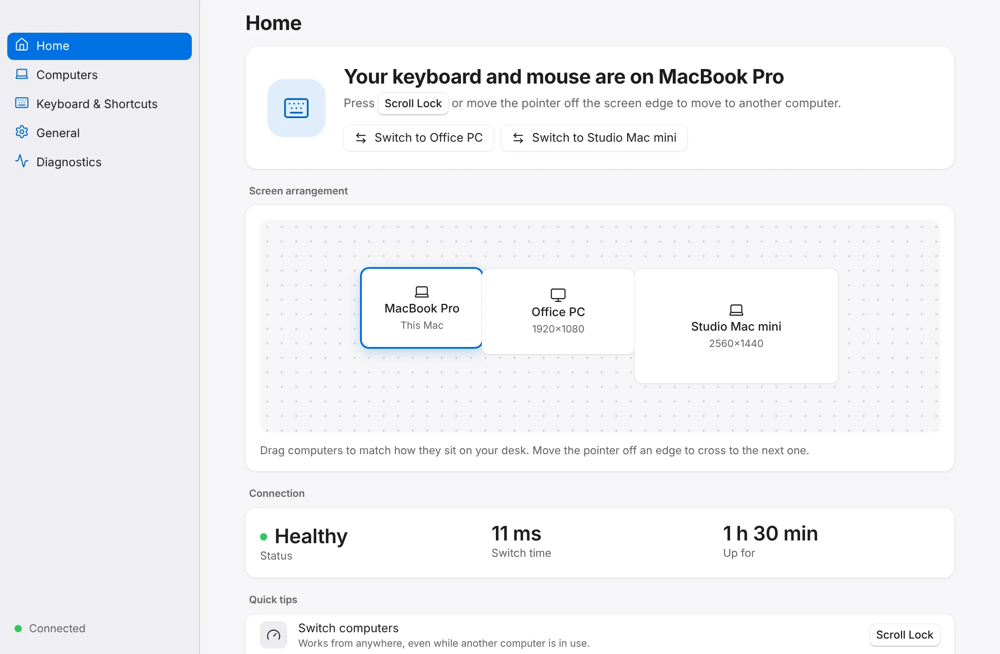

Switch
One key.
Next computer.
Tap Scroll Lock — or any shortcut you like — and your keyboard and mouse are instantly on the next machine. A second shortcut brings you straight back home, wherever you are.
- Works even while another computer is in use
- Optional “come back” shortcut
- A subtle on-screen badge confirms where you are
